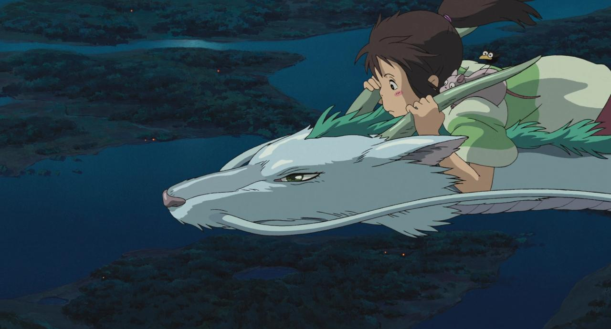

Spirited Away
Creada y envuelta en imágenes delicadas y llenas de vida por
Hayao Miyazaki para Studio Ghibli.
La belleza de Spirited Away está en cómo mezcla fantasía y
emociones reales a través de la protagonista, Chihiro, que
está en un mundo mágico lleno de espíritus.
La película habla sobre crecer, encontrar valor y no perder
quién eres.
